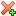

If you select a specific channel, then the Show handshake button (
WebSockets sekmesi WebSocket bağlantılarından gelen tüm mesajları görüntüler. ZAP aktif durumdayken, WebSockets'i eylem halinde görmek için, örneğin şurayı ziyaret edin: Mozilla BrowserQuest.
You can restrict the display of messages to one specific WebSocket
channel or all.
If you select a specific channel, then the Show handshake button
( )
becomes enabled. When you click on it, the corresponding HTTP handshake is
shown in the Request/Response tab.
)
becomes enabled. When you click on it, the corresponding HTTP handshake is
shown in the Request/Response tab.
In the filter dialog ( )
you can further control which messages are displayed.
)
you can further control which messages are displayed.
You can set custom breakpoints using the Add Custom Breakpoints
button ().
Alternatively you can use the Right click menu.
Bir WebSocket menüsüne sağ tıklama şunu yapmanızı sağlayacak bir menü getirecektir:
WebSocket connections can be excluded from the WebSockets tab by adding an excluded URL to the Session Properties. Bu öğeye tıklamak, önceden girilen URL ile oturum özelliklerini getirir. Bir WebSocket bağlantısını hariç tutmak bağlantının kapanmasıyla sonuçlanmayacaktır fakat onları daha fazla işlem yapmadan iletmeyle sonuçlanacaktır.
This will bring up the Add Break Point dialog which allows you to set up a custom break point.